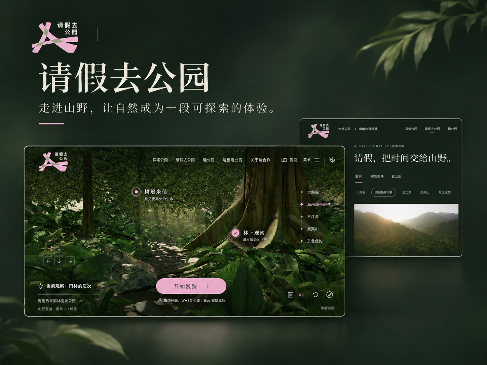

01 / 山野漫游 · 国家公园体验探索
走进雨林之前，先被一个愿望打动。
公开原型 · 持续完善

与纪录片导演吕孝波的一次聊天，是这个项目的起点。他发起「国家公园」项目，希望忙碌的城市人有机会走进山野，也希望孩子们能亲近真实的自然。我们有那么多美好的地方，却未必被身边的人看见。这个愿望打动了我。
我想借助他提供的内容和影像，做一个可以自由探索的线上空间。海南热带雨林是其中最想实现的一段：像第一人称游戏那样走进林间，听见脚步和风吹树叶的声音，突然转头，发现一只小动物。希望屏幕里的体验，能让人产生去真实山野看一看的念头。
借助 AI，我开始搭建场景和交互，也不断遇到想象之外的问题。最初的质感像塑料；后来树干和树叶脱了节，天空像一块假的黑布。走路与风吹树叶的声音没有很好地配合起来，偶遇动物的惊喜也还没做出来。
目前可以进入海南场景漫游、观看影像，但离自然可信的雨林还有明显距离。我想如实留下这些不够好的地方：它们也是这次创作的一部分。
02 / 将进酒 · 古诗声画实验
如果古诗能听见 看见 也能参与。
可体验作品 · 古诗声画实验
 进入诗境 ↗
进入诗境 ↗看到身边有孩子的技术同事用 AI 制作教辅小工具，我也有了新的兴趣。原来一些难理解的知识，可以换一种有趣的方式呈现。我想试试：古诗里的画面、声音和情绪，能不能成为一次可以参与的阅读？
我选择了《将进酒》，与 Codex 讨论诗句怎样分幕、每一幕如何展开，再结合画面生成、视频和语音工具，把朗读与诗文交互组织起来。做着做着，要考虑的事情越来越具体：画面怎样回应诗意，声音和文字怎样配合，互动会不会打断阅读。它们都需要在实际体验中反复取舍。
这次，我不再只把设计稿交给流程里的下一位同事，而是跟着想法走到可以打开的作品。AI 帮助我跨过了不少实现上的门槛，也让我能亲自检查从构想到成品之间的衔接。
现在的作品是一段四幕诗境，仍有可以打磨的地方。我希望它让人愿意靠近古诗、多停留一会儿；它还没有经过课堂和学习效果验证。
03 / Allsome · 创作交流空间
同事做的小东西 值得被更多人看见。
交互原型 · 未正式上线
 打开交互演示 ↗
打开交互演示 ↗大家开始使用 AI 后，身边的同事陆续做出了各种小“东西”：插件、Bot、Skill、应用、本地工具，很难用一个名字概括。有的解决工作问题，有的纯粹出于兴趣。中秋发了月饼礼盒，大家在群里买卖礼盒、玩偶、双肩包和月饼，就有同事做了一个「饼交所」，方便出价和交易。
这样有趣又实用的作品不少，作者却常常缺少宣传的地方。我想发起一个公司里的民间创作组织，让作品有地方展示，也让有想法的人能找到彼此。Allsome 由此开始。
我借助 AI 推进产品结构和交互演示，把包括自己在内、来自不同岗位的同事形象变成卡通人物，围坐在一起做创意。人物会转过头来打招呼。画面里特意空了一把椅子，留给正在看的人。
目前完成的是可体验的交互原型，项目没有正式上线，演示内容用于呈现构想。那把空椅子表达的邀请，是我希望这个空间将来能做到的事。
04 / 卷了个卷 · 开源三消改造
喜欢玩消除游戏 也想做一个自己的版本。
微信小游戏 · 个人版本实玩
我平时很喜欢玩《开心消消乐》。找到一个开源三消项目后，我开始想：能不能借助 AI，把它改成带有自己风格的游戏？《卷了个卷》就是这样做起来的。
我用 Codex 在开源项目上重新设计美术、玩法和规则，加入办公室与“摸鱼”的趣味。基础项目让我不必从零搭起一切，也让我能把精力放在自己想改变的体验上，再通过实际试玩检查效果。
过程中，我第一次接触微信小游戏的开发环境。在 Codex 的指引下，我逐步了解小游戏与小程序的区别，学习在微信开发者工具的模拟器里运行、调试，再拿到手机上玩。从开发准备到发布上架该怎么做，都是边做边学。
下面的录像是我的个人版本手机实玩。对我来说，有意思的地方也在于这段过程：以前只是游戏里的玩家，现在可以把自己的想法做出来，再亲手玩一遍。
视频暂时无法播放。你可以直接打开视频文件。 直接打开视频 ↗
先熟悉新的开发环境
在微信开发者工具中运行小游戏并检查实际画面。
微信开发者工具
 放大查看完整原图 ↗
放大查看完整原图 ↗
05 / 手势粒子星球 · 视觉与手势交互实验
伸出手 试着转动一颗星球。
交互实验 · 视频演示
视频暂时无法播放。你可以直接打开视频文件。 直接打开视频 ↗
这次实验从一个画面开始：一颗由橙色发光粒子组成的星球，外面环绕两层白色星环。如果伸出手就能转动它、拉近和拉远，应该很好玩。
我用 Gemini 3 网页版的 Canvas 模式推进实现，描述视觉效果，也把交互规则写进去：手掌旋转时改变观察角度，握拳并远离镜头时拉远，张开手掌并靠近时拉近。移动要有速度变化和缓动，还要留出安全距离，避免镜头穿进星球。
Three.js 提供三维渲染基础，MediaPipe 帮助识别手部关键点，应用再把这些信息映射成视角变化。以前觉得需要专门技术背景才能尝试的交互，因为 AI 和这些开源工具，开始变得可以亲手摸索。
成品可以在浏览器中运行。这里放的是实际操作录像，能直接看到手势与画面的对应。它是一项视觉交互实验，也让我认识到，已经有人把许多复杂能力做好了，我们可以接着尝试自己的想法。